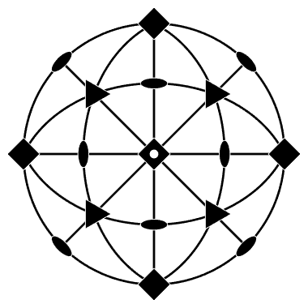
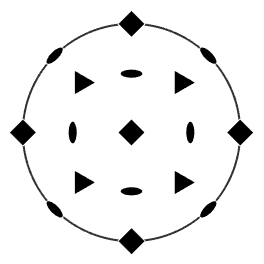
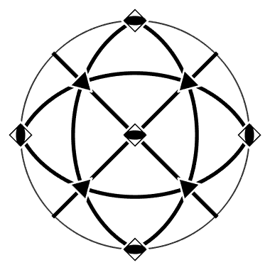

Explains how to define crystal symmetries.
Crystal symmetries are a sets of rotations and mirroring operations that leave the lattice of a crystal invariant. They form so called groups since the concatenation of to symmetry operations is again a symmetry operation. Crystal symmetries are classified in various ways - either according to the corresponding space group, or the corresponding point group, or the corresponding Laue group. In total there are only 11 different Laue groups present in crystallography. All these 11 Laue groups are supported by MTEX. More precisely, in MTEX a Laue group is represented by a variable of the class symmetry.
cs = crystalSymmetry('m-3m')cs = crystalSymmetry symmetry: m-3m a, b, c : 1, 1, 1
defines a cubic crystal symmetry using the international notation. Of course MTEX understands also the Schoenflies notation
cs = crystalSymmetry('O');
If not the name of a Laue group was specified but the name of a point group or a space group MTEX auomatically determines the corresponding Laue group and assigns it to the variable.
cs = crystalSymmetry('Td');
Finally, MTEX allows to define a crystal symmetry by importing a crystallographic information file (*.cif).
cs = loadCIF('quartz')cs = crystalSymmetry mineral : Quartz symmetry : 321 a, b, c : 4.9, 4.9, 5.4 reference frame: X||a*, Y||b, Z||c
In the case of cubic crystal symmetry the crystal coordinate system is already well defined. However, especially in the case of low order crystal symmetry the crystal coordinate system has to be specified by the length of the axes and the angle between the axes.
cs = crystalSymmetry('triclinic',[1,2.2,3.1],[80*degree,85*degree,95*degree]);
In the case of trigonal and hexagonal crystal symmetries different conventions are used. One distinguishes between the A and the B configuration depending whether the a axis is aligned parallel to the x axis or parallel to the y axis. In order to specify the concrete
cs = crystalSymmetry('-3m',[1.7,1.7,1.4],'X||a'); plot(cs)
cs = crystalSymmetry('-3m',[1.7,1.7,1.4],'Y||a'); plot(cs) hold on plot(cs,'hkl','backgroundcolor','w') hold off
applying the specimen symmetry from the left and the crystal symmetry from the right onto a orientation results in a vector containing all crystallographically equivalent orientations.
ss = specimenSymmetry('mmm'); % specimen symmetry ss * orientation('euler',0,0,pi/4,cs,ss) * cs % all crystallographically equivalent orientations
ans = rotation size: 8 x 12
One can also visualize crystal symmetries by plotting the main axes and the corresponding equivalent directions
h = [Miller(1,0,-1,0,cs),Miller(1,1,-2,0,cs),... Miller(1,0,-1,1,cs),Miller(1,1,-2,1,cs),... Miller(0,0,0,1,cs)]; for i = 1:length(h) plot(h(i),'symmetrised','labeled') hold all end hold off
| DocHelp 0.1 beta |